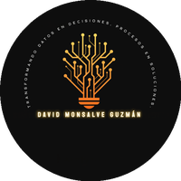

La telemetría registra el exceso. Nadie se lo avisa al conductor a tiempo.
La plataforma GPS de la empresa tiene marcadas las curvas peligrosas como geocercas y genera un evento cuando un vehículo las toma por encima del límite. El evento llega cuando el riesgo ya se corrió: el conductor, sus auxiliares y las personas que comparten la vía ya estuvieron expuestos a un volcamiento o a una salida de vía. Después vienen las consecuencias para el indicador y el bono de la tripulación.
Se entera el líder, después
- El camión entra a la curva a la velocidad que traía.
- La plataforma GPS registra el evento.
- El líder lo ve en un informe, horas o días después.
- Se gestiona el incumplimiento cuando ya no se puede evitar.
Se entera el conductor, antes
- A 300 m de la curva, el celular la anuncia por voz con su velocidad máxima.
- Si viene rápido, la alerta se repite hasta que frene.
- Si aun así la toma con exceso, el líder recibe una notificación al salir el camión de la curva, o al recuperar la señal si no la había.
- Queda en el historial con placa, conductor, hora y velocidad.
Una curva, de la entrada a la salida
Cada curva crítica es un tramo de vía con su velocidad. El celular del conductor compara su posición y su velocidad con los tramos que tiene delante, en su sentido de marcha.
- A 300 m de la entrada«Curva cerrada adelante. Máximo 20».
- Si viene rápido«Reduzca a 20», repetido cada 5 segundos hasta que frene.
- Dentro del tramoSe controla la velocidad. Exceso = 2 lecturas sobre el límite + 3 km/h.
- A la salida«Fin de la curva».
Véalo y escúchelo. Demo interactivo de un camión por la Vía al Mar: la pantalla del conductor, las alertas por voz y lo que recibe el líder cuando hay un exceso.
Abrir el demoTres pantallas para tres personas
El conductor maneja con alertas. El líder de agencia vigila la flota y recibe los excesos. El administrador configura las curvas y los límites. Está en producción en Corozal y Magangué. Para Barranquilla se adapta: agencia propia, zona urbana del área metropolitana y sus curvas.
Conductor: Modo ruta
- Elige su camión al iniciar. Se le sugiere la placa de su planeación del día. Una placa no puede tenerla otro conductor al mismo tiempo.
- Marca el destino por dirección, municipio, cliente o tocando el mapa. Recibe hasta 3 rutas y elige una.
- Navega con el mapa centrado hacia adelante, su velocidad grande y la señal del máximo de la vía en la cabecera.
- Alertas por voz antes de cada curva crítica, repetidas si no frena, y aviso de fin de curva al salir.
- Velocidad de vía: avisa por voz al superar el máximo urbano o nacional. Si el exceso dura 3 segundos o más, queda registrado.
- Ruta habitual: recuerda qué ruta usa cada camión para cada destino y la deja preseleccionada.
- Desvío de ruta: detecta que salió del recorrido, recalcula y le indica dónde retomarlo. Mientras tanto vigila todas las curvas que tenga cerca.
- Nada se toca en marcha: terminar la ruta o cambiar el destino solo se ofrece con el camión detenido.
- Sin cobertura: las curvas viajan en el celular. Excesos, recorrido y fin de ruta se guardan y se envían al volver la señal. Puede iniciar sin destino y sin internet.
- Pantalla siempre encendida y guía para preparar el celular (instalar la app, fijar la pantalla).
Líder: Flota en vivo
- Mapa de la flota con la placa de cada camión, en pantalla completa para la sala de control. Cada camión reporta cada 30 s y la pantalla se refresca cada 15 s.
- Estado por camión: en curva, en marcha, detenido, estacionado, en pausa o sin señal, ordenados por urgencia y con filtros. Toda posición dice de cuándo es.
- Notificación inmediata en el celular o el PC por cada exceso en curva, exceso de velocidad o salida de ruta, con placa, conductor y velocidad, y sonido en la pantalla de la flota.
- Ficha del camión: ruta elegida, lo recorrido y los tramos sin señal.
- Historial por día, placa y conductor: salida, llegada, recorrido y excesos numerados sobre el mapa.
- Liberar una placa cuando un conductor no cerró su ruta.
Administración: Curvas y límites
- Carga inicial del listado de curvas de la plataforma GPS, convertido a tramos de vía reales.
- Marcar curvas nuevas con dos toques en el mapa (entrada y salida). El sistema ajusta el trazo a la vía.
- Editar o borrar cualquier curva: tipo, velocidad y extremos arrastrables.
- Límites editables: curva cerrada y abierta (10-60 km/h) y vía urbana y nacional (30-80 km/h).
- Placas: se toman de la planeación y se corrigen a mano solo las excepciones.
- Configuración propia de Barranquilla: sus curvas, límites y flota quedan separados de los de Corozal y Magangué.
Seguridad y datos
- Acceso por rol: el conductor solo ve su Modo ruta. Cada líder ve la flota de su agencia y los administradores ven todas.
- Los datos quedan en el Microsoft 365 de la empresa (SharePoint): posiciones, rutas, recorridos y excesos. El acceso se limita al sitio del módulo.
- Protección contra envíos falsos o masivos: validación de coordenadas y fechas, límites de envío por conductor y una notificación por minuto como máximo.
- Conexión cifrada (HTTPS) y sesión con caducidad. El detalle está en la sección 07.
Una app que no se duerme cuando se bloquea la pantalla
En las pruebas de campo de Corozal, 2 de 3 celulares dejaron de alertar al bloquear la pantalla o al abrir otra app. Un navegador no puede impedirlo: Android congela la página para ahorrar batería. En una flota de 60 vehículos, una alerta que se pausa no sirve en ruta.
| Situación en ruta | Versión web actual | App Android (esta propuesta) |
|---|---|---|
| Pantalla bloqueada | Se pausa | Sigue alertando |
| El conductor abre otra app (WhatsApp, música) | Se pausa | Sigue alertando y baja la música para hablar |
| Entra una llamada | Se pausa | GPS y control siguen; el aviso sale como tono y vibración, o por voz si se decide |
| Ahorro de batería del fabricante | Puede cerrarla | Protegido en los modelos certificados; la app verifica el ajuste al iniciar |
| El celular se reinicia en ruta | Ruta perdida | Ofrece reanudar la misma ruta con un toque |
| Sin cobertura | Alerta y guarda | Alerta y guarda, también en segundo plano |
| El líder sabe si un celular dejó de reportar | Lo ve como «en pausa» | Señal de vida cada 30 s y alerta de «sin reportar» |
Cómo está construida
Lo que alerta no depende de la pantalla. Corre en un servicio nativo de Android que el sistema no congela.
- Servicio de ubicación en primer plano con notificación fija «Modo ruta activo». Es el mecanismo que usan las apps de navegación.
- Motor de alertas nativo con las mismas reglas que hoy funcionan en Corozal, verificado contra los mismos escenarios de prueba antes del piloto.
- Voz nativa de Android por el canal de navegación: baja la música para hablar.
- Cola de envío nativa: lo que no sale por falta de señal se reintenta solo.
- La pantalla del conductor es la misma de hoy. La capacitación se limita a instalar la app y conceder los permisos. El líder sigue usando la flota desde el navegador.
- Va en el celular personal del conductor. Se instala desde un enlace privado, sin administración de dispositivos y sin tocar sus fotos, contactos ni otras apps. Las actualizaciones llegan solas. Está incluida en la licencia, sin costo adicional.
- Solo sigue la ubicación durante la ruta. Al terminar la ruta, la app deja de leer el GPS y el líder deja de ver al conductor. Lo indica una notificación fija mientras está activa.
- Solo Android. En iPhone queda la versión web, con su limitación de pantalla bloqueada.
Criterios de aceptación en el piloto
Se miden en campo, en los modelos de celular más comunes entre los conductores, antes de instalar la app en toda la flota.
- Alerta antes de la entrada, con la pantalla bloqueada, en al menos el 99% de los pasos por curva, sobre 300 pasos o más contrastados con la plataforma GPS.
- Servicio activo durante al menos el 98% del tiempo de ruta. Cualquier hueco de más de 60 s queda explicado.
- Durante una llamada, el GPS y el control siguen activos y el aviso sale. Se verifica en al menos 20 llamadas de prueba por modelo.
- Lo guardado sin señal llega completo en menos de 10 minutos al recuperar cobertura.
- Con el cargador de cabina, la batería no baja del 50% en una jornada de 10 horas y el celular no se sobrecalienta. El consumo de datos móviles se mide y se informa.
Qué no se puede prometer, y cómo se cubre. Ningún software puede garantizar la alerta si el conductor apaga el celular, si se agota la batería o si niega los permisos. La app no deja iniciar la ruta mientras falte un permiso y dice cuál falta. El líder ve en la flota cada celular que dejó de reportar. Como los celulares son personales y de muchas marcas, la garantía aplica a los modelos certificados en el piloto, que se escogen entre los más comunes en la flota. En los demás, la app revisa al iniciar cada ruta que los ajustes estén bien y avisa si falta alguno. Algunos fabricantes, como Xiaomi y HONOR, exigen un ajuste adicional que la app guía paso a paso.
Durante una llamada, por defecto el aviso sale como tono y vibración para no tapar la conversación. Se puede activar la voz, como en las apps de navegación. Se decide con la Gerencia en el arranque.
En una semana Barranquilla ya está alertando
No hay que esperar a la app para empezar. La implementación toma una semana: se cargan las curvas y los usuarios de Barranquilla y la versión web, ya en producción, queda en servicio. Funciona con la pantalla encendida y la app fija.
- Día 1ArranqueEntrega de datos y accesos, decisiones de operación y servidores listos.
- Día 2CurvasLas curvas críticas de Barranquilla se cargan como tramos de vía y se verifican en el mapa.
- Día 3Usuarios y placasConductores, líderes y administradores con su rol y su clave; placas tomadas de la planeación.
- Día 4CapacitaciónLíderes en la flota en vivo, el historial y la configuración; conductores en el Modo ruta.
- Día 5En operaciónBarranquilla sale a ruta con alertas, flota en vivo e historial.
La semana corre desde que la Gerencia entrega los datos y accesos de la sección 06.
Después: la app Android
La app Android se construye después de la implementación, incluida en la licencia y sin costo adicional, y llega a los celulares dentro del contrato mínimo de seis meses. Antes de pasar a toda la flota se prueba con 10 a 15 conductores y debe cumplir los criterios de la sección 04. Mientras tanto, la versión web sigue en servicio.
Entregables
- Curvas críticas de Barranquilla cargadas como tramos de vía y verificadas.
- Usuarios de conductores, líderes y administradores creados con su rol.
- Manual del conductor de una página y manual del líder.
- Capacitación en sitio a líderes y en grupos a conductores.
- Después, la app Android firmada y el informe de su piloto con las mediciones de cada criterio.
Infraestructura incluida
- Servidor de la aplicación y actualizaciones.
- Servidor de rutas propio, con licencia para uso comercial.
- Mapas y búsqueda de direcciones con proveedor comercial.
- Notificaciones a líderes.
- Monitoreo del servicio y copias de seguridad.
Lo que se necesita de Barranquilla
El cronograma empieza a correr con estos insumos. La mayoría ya existen en la empresa: son los mismos que se usaron en Corozal.
Información de la operación
- Listado de curvas críticas de la plataforma GPS para Barranquilla, en Excel: nombre, coordenada, tipo (cerrada o abierta) y límite.
- Regla de la plataforma GPS para el evento de exceso: umbral y duración, para alinear la alerta con lo que se mide.
- Vehículos: placas activas.
- Planeación diaria (conductor y placa por ruta), en el mismo formato de Corozal.
- Personas: conductores (cédula y nombre), líderes y administradores, con su centro de distribución.
Celulares y vehículo
- El celular personal del conductor: Android 10 o superior (recomendado 11+), GPS, 3 GB de RAM como mínimo (recomendado 4 GB). Los conductores con iPhone usan la versión web.
- Plan de datos móviles activo. Se recomienda un auxilio de datos, porque la app usa el plan del conductor; el consumo real se mide en el piloto.
- Soporte fijo y cargador en la cabina. El celular no se manipula con el vehículo en marcha.
- Marca y modelo del celular de cada conductor, para certificar en el piloto los más comunes.
- Autorización de cada conductor para instalar la app en su celular personal.
Personas, accesos y políticas
- Responsable funcional de la Gerencia y un líder por centro de distribución.
- 10 a 15 conductores y sus rutas para el piloto.
- Acceso al Microsoft 365 de la empresa: un sitio de SharePoint para el módulo y una aplicación registrada con permiso solo sobre ese sitio.
- Autorización de tratamiento de datos de ubicación de los conductores (Ley 1581 de 2012).
- Decisiones: aviso durante llamadas, tolerancia sobre el límite de vía, tiempo de conservación de recorridos y excesos.
Los datos son de la empresa y se quedan en su casa
La información del módulo vive en el Microsoft 365 de la empresa, no en servidores de Yo Reporto. Estos son los controles que tiene hoy la app en producción. El área de TI puede verificar cada uno.
Acceso y contraseñas
- Contraseñas cifradas con bcrypt. Nunca se guardan ni se envían en texto plano, y nadie, ni Yo Reporto, puede leerlas.
- Bloqueo contra adivinación: tras varios intentos fallidos se bloquea la cuenta y la dirección de origen por 15 minutos, y el bloqueo crece hasta 24 horas.
- Claves seguras: la app rechaza claves que contengan el nombre, el correo o la cédula. En Barranquilla cada usuario recibe una clave inicial única y la puede cambiar desde la app.
- Sesión protegida: firmada por el servidor, guardada en una cookie que el navegador no deja leer a otros scripts, y vence a las 12 horas.
Permisos y aplicación
- Cada rol ve solo lo suyo: el conductor, su Modo ruta; el líder, la flota de su agencia; el administrador, toda la Gerencia. Se verifica en el servidor en cada consulta, no en el celular.
- Nada de lo que envía el celular se acepta sin revisar: coordenadas dentro de Colombia, fechas, velocidades y tamaños válidos. La agencia de cada exceso la pone el servidor, no el celular.
- Límites de frecuencia por usuario para búsquedas, rutas y notificaciones, contra el abuso o el envío masivo.
- Conexión siempre cifrada (HTTPS obligatorio) y cabeceras de seguridad contra suplantación de la página.
- Auditoría de seguridad completa antes de salir a producción, en septiembre de 2026. Los fallos críticos que encontró se corrigieron.
Dónde y cómo se guardan
- En el Microsoft 365 de la empresa, con sus políticas, su cifrado y sus copias de seguridad.
- Yo Reporto entra con un permiso limitado al sitio del módulo, que TI puede revocar en cualquier momento.
- Las claves del servidor viven en variables protegidas del servidor, nunca en el código ni en el celular.
- Uso exclusivo para seguridad vial: los datos no se venden, no se comparten con terceros y no se usan para otro fin.
- Al terminar el contrato se entregan exportados y Yo Reporto pierde todo acceso.
Privacidad del conductor
- El GPS se lee solo durante la ruta. Al terminarla, la app deja de seguir al conductor. Una notificación fija indica cuándo está activa.
- Permisos mínimos en el celular personal: ubicación y notificaciones. La app no lee contactos, fotos, mensajes ni llamadas.
- App firmada por Yo Reporto y descargada solo desde el enlace oficial.
- Ley 1581 de 2012: cada conductor autoriza el tratamiento de su ubicación con un aviso de privacidad. La Gerencia decide cuánto tiempo se conservan los recorridos.
Una licencia mensual fija para Galapa y La Arenosa
Un pago de implementación que incluye el primer mes de licencia y, desde el segundo mes, una licencia mensual fija que cubre hasta 80 usuarios: los conductores y operativos de las rutas de Galapa y La Arenosa, que usan la app Android, y los líderes y administradores que gestionan y monitorean desde la web. La licencia cubre la operación completa: servidores, mapas, rutas, soporte, la app Android y su actualización permanente. Valores en pesos colombianos.
Cómo se paga
- Implementación
- $3.800.000, una sola vez. Incluye la puesta en marcha en una semana y el primer mes de licencia.
- Licencia mensual
- $1.000.000 al mes, desde el segundo mes. Cubre hasta 80 usuarios y no depende de cuántos vehículos salgan.
- Contrato mínimo
- 6 meses.
- Después de 6 meses
- Sin cláusula de permanencia: la Gerencia paga solo la licencia de los meses en que use la herramienta.
Curvas, usuarios y placas de Barranquilla, servidores, capacitación y el primer mes de licencia. Lista en una semana.
Desde el segundo mes. Con unos 60 vehículos son unos $16.700 por vehículo al mes.
Incluido en la licencia
- Servidores, rutas, mapas, direcciones y notificaciones.
- La app Android, su piloto y su instalación en la flota.
- Soporte de lunes a viernes de 7:00 a.m. a 6:00 p.m. y sábados hasta las 2:00 p.m., por tickets con prioridad de atención.
- Correcciones, compatibilidad con nuevas versiones de Android y mejoras menores.
- Carga de curvas nuevas de Barranquilla. Los líderes también pueden marcar las que quieran.
Sin costo y con costo adicional
- Sin costo durante la implementación: ajustes de imagen, como los colores y el logo de la empresa.
- Con costo adicional: módulos nuevos o desarrollos de funciones que la app no tiene hoy. Cada solicitud se revisa y se cotiza aparte.
Cuándo se paga sola
El primer retorno no se mide en pesos: cada curva tomada a la velocidad correcta es un riesgo menos para la tripulación y para quienes van por la vía. En dinero, el contrato mínimo de seis meses cuesta 8,8 millones y un año, 14,8 millones. Los valores de siniestro son referencias del sector y se reemplazan por los reales de Barranquilla.
Condiciones comerciales
- Vigencia de la oferta
- 30 días calendario desde el 5 de noviembre de 2026.
- Forma de pago
- Implementación y primer mes ($3.800.000): 50% a la firma y 50% al terminar la semana de implementación, con la web en servicio en Barranquilla. Licencia: se factura mes a mes desde el segundo mes.
- Usuarios
- Hasta 80 usuarios activos: conductores y operativos de las rutas de Galapa y La Arenosa en la app Android, y líderes y administradores en la web.
- Plazo
- 6 meses como mínimo. Después no hay cláusula de permanencia: la Gerencia paga solo la licencia de los meses en que use la herramienta.
- Garantía del piloto
- Si el piloto no cumple los criterios de la sección 04 en los modelos certificados, Yo Reporto corrige sin costo. Si tras la corrección sigue sin cumplir, la Gerencia puede terminar el contrato sin esperar a que se cumplan los 6 meses.
- Propiedad intelectual
- El código fuente, el software, la app y la marca son de Yo Reporto y no se entregan. La Gerencia recibe una licencia de uso no exclusiva e intransferible mientras dure el contrato.
- Datos
- La Gerencia es dueña de sus datos: ubicación, rutas, conductores y excesos. Se guardan en el Microsoft 365 de la empresa. Se tratan conforme a la Ley 1581 de 2012. Al terminar, se entregan exportados y se retiran los accesos de Yo Reporto.
- No incluye
- Celulares (son los personales de los conductores), planes de datos, soportes y cargadores, licencias de Microsoft 365 y la plataforma GPS de la empresa.

¿Arrancamos la semana de implementación?
Escríbame y coordinamos la entrega de datos. En cinco días Barranquilla sale a ruta con las alertas activas.
Escribir por WhatsApp David Monsalve Guzmán · Desarrollador de Yo Reporto · +57 324 714 6958